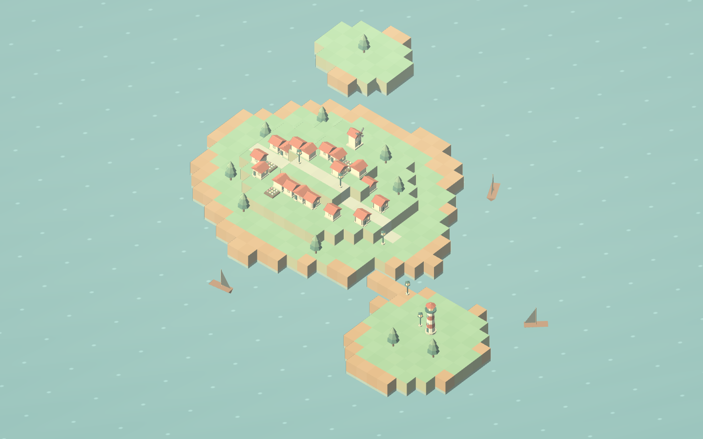
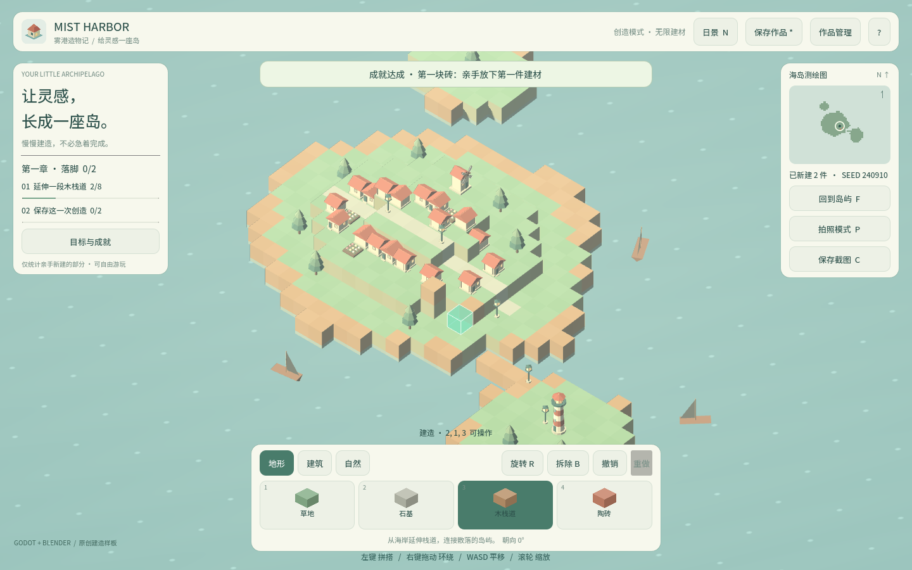

卷 7 · 第 35 章 社区运营：让作品被看见、被复刻、被改进
本章目标：理解本项目的"运营资产"其实已经在仓库里——
可复刻的任务清单、可分享的存档 JSON、CC0 资产、可教学的课程。
对应任务：T47 | 对应文件：syllabus.md、README.md、导出/导入 JSON
35.1 四类现成的运营资产
| 资产 | 在哪 | 怎么用 |
|---|---|---|
| --- | --- | --- |
| 可玩链接（Web） | build/ | 一条链接，零安装，最适合传播（第 34 章） |
| 作品分享（存档 JSON） | 游戏内导出/导入 | 玩家互相交换岛屿 → UGC 的最小闭环 |
| CC0 资产 | assets/models/ + manifest | 别人可以合法用在自己的项目里 |
| 课程与任务清单 | course/、syllabus.md | 教学、直播、作业（第 36 章） |
📌 很多项目上线后才开始想"运营素材"，其实开发过程本身就在产出它们——
前提是你有意识地把它们留下来。
35.2 视觉素材：会说话的截图
玩家的注意力只有几秒。第一张图决定他要不要点进来。
| 类型 | 要点 | 本项目的做法 |
|---|---|---|
| --- | --- | --- |
| 首图 | 一眼看懂玩法 + 风格统一 | 岛屿全貌（含起始村庄作参照物，第 18 章） |
| 对比图 | 昼夜 / 前后 | N 键切换，两套配色 |
| 过程图 | "我也能做出来" | 建造过程 + 目标面板 |
| 短动图 | 展示交互手感 | 放置/拆除/旋转循环 |
工具就是游戏本身：
P 隐藏 HUD（截干净画面） C 保存截图（第 24 章）
N 昼夜切换 F 回到岛屿中心📌 第 24 章那两个键在这里变现：摄影模式就是运营工具。
不需要额外的截图工具，也不需要后期处理。
35.3 更新节奏：小步、可预期
| 节奏 | 做法 |
|---|---|
| --- | --- |
| 每次更新都要可玩 | 提交前跑 dev.py test + 导出（第 32 章） |
| 更新要说清"变了什么" | 用提交信息里的要点（本仓库一直在做） |
| 固定节奏 | 每周/每两周一版，哪怕只改一点 |
| 收集反馈的入口 | 仓库 Issues / 社区帖 / 直播弹幕 |
反模式：憋三个月发一个"大版本"。
小作品的生命力来自持续可见的进展。
35.4 UGC 的最小闭环
玩家 A 造岛 → 导出 JSON → 分享
↓
玩家 B 导入 → 看到 A 的作品 → 改造 → 再分享为什么这很值钱：
- 你不用做"关卡编辑器"就有 UGC（存档即关卡）
load_document()的全量校验保证"别人的存档不会搞坏游戏"（第 21 章）- 固定 seed 让地形可复现（第 17 章）
📌 这是"用已有机制达成运营目标"的典型：
导入/导出本来是为了存档健壮性做的，却天然成为了分享功能。
35.5 开源与许可
| 内容 | 许可 | 说明 |
|---|---|---|
| --- | --- | --- |
| 代码 | 仓库许可（自行设定） | 明确写 LICENSE |
| 模型资产 | CC0-1.0 | manifest 里已声明，可商用无需署名 |
| 字体 | Noto Sans SC OFL 1.1 | 可商用，需保留许可声明 |
为什么写清楚许可很重要：
- 别人敢用 → 你的作品被传播
- 你也免于后续的许可纠纷
🌩 在云端 agent（web-cb）里是什么样
| 🖥 本地路线 | 🌩 云端 agent（web-cb） | |
|---|---|---|
| --- | --- | --- |
| 试玩链接 | 自己托管 | 云端预览即链接，分享成本几乎为零 |
| 素材产出 | 本地截图 | 云端同样可用游戏内摄影键 |
| 社区反馈 | 手工整理 | 建议做成结构化 issue 模板（版本 + 复现 + 期望） |
| 风险 | 低 | 云端链接若含凭据要小心（本项目不含） |
🌩 云端再提醒一次：预览链接是公开的，别把本地凭据写进任何会被分享的产物。
35.6 常见坑速查（本章）
| 现象 | 原因 | 处理 |
|---|---|---|
| --- | --- | --- |
| 没人点进来 | 首图没说清玩法 | 用含起始村庄的全貌图 |
| 截图里全是面板 | 没用 P 隐藏 HUD | 第 24 章 |
| 玩家不敢分享作品 | 没有导出入口 | 用已有的 JSON 导入/导出 |
| 别人不敢用你的资产 | 没写许可 | 标明 CC0 与 OFL |
| 更新后玩家流失 | 更新破坏存档 | 归档版本号 + 保持 load_document 兼容 |
| 反馈无法复现 | 没版本信息 | 反馈模板里带上版本号与平台 |
35.7 本章作业
- 列出四类现成运营资产，说明各自怎么用
- 说出四类视觉素材的要点，并指出本项目用哪两个键产出它们
- 解释"存档即关卡"为什么是低成本 UGC，指出它依赖哪两个已有机制
- 为你的项目写一段 100 字以内的介绍（要让人一眼看懂玩法）
🎓 教学提示（给教师 / 直播主）
- 概念锚点：运营素材是开发过程的副产品，前提是留下来。
- 课堂演示：用
P+C现场产出一张可发布的截图。 - 高频误解：学生以为运营是"做完了才开始"。讨论：什么时候开始留素材最省事？
- 讨论题：你的项目里，哪个已有机制可以顺手变成运营功能？
- 批改要点：作业 3 要提到"全量校验"与"固定 seed"。
🖼 本章图集


📹 录屏分镜（8 分钟）
| 时间 | 画面 | 解说词要点 |
|---|---|---|
| --- | --- | --- |
| 00:00–01:20 | 四类运营资产表 | "素材已经在仓库里。" |
| 01:20–03:00 | 用 P/C 现场出图 | "摄影模式就是运营工具。" |
| 03:00–04:30 | 更新节奏与反馈入口 | "小步，可预期。" |
| 04:30–06:00 | 存档即关卡的 UGC 闭环 | "已有机制的复用。" |
| 06:00–08:00 | 许可 + 作业 |
🎬 视频位（待录制）
把录好的视频放到course/media/video/35/（mp4 / webm / mov），重新执行 python tools/course_build.py 即会自动内嵌；首帧默认用本章第一张截图作为封面。分镜脚本见上一节。🖼 配图清单
| 文件名 | 内容 | 生成方式 |
|---|---|---|
| --- | --- | --- |
35-hero-shot.png | 可作首图的岛屿全貌（P 隐藏 HUD） | python tools/course_capture.py --chapter 35 |
35-share-build.png | 建造成果（可导出分享） | 同上 |
🎥 直播脚本（L3 片段，10 分钟）
- 开场："如果只能发一张图，你发哪张？"
- 演示：P + C 出图，现场挑首图
- 互动：观众投票选首图
- 收尾：预告直播教学与作业批改
❓ 本章 FAQ
Q：要不要做内置的作品分享平台（在线 gallery）？
A：那是"不联网"约束之外的另一个产品（第 33 章 W 档）。当前用 JSON 文件分享即可。
Q：CC0 是不是等于放弃著作权？
A：CC0 是放弃到公有领域，任何人可任意使用（含商用），无需署名。选用前请确认这是你想要的。
Q：玩家反馈的 bug 怎么转成回归测试？
A：见第 31 章：先在 L1 加一条断言复现它，再修——这样它永远不会再回来。